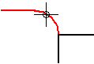

Offset command bar
- Style
-
Sets the active style. This option is available only when working with a sketch.
- Line Color
-
Sets the drawing color. You can click the More option to define custom colors with the Color dialog box.
- Line Type
-
Sets the drawing line type and style. This option is available only when working with a sketch.
- Line Width
-
Sets the line width. This option is available only when working with a sketch.
- Select Step
-
Allows you to select the elements you want to offset.
- Side Step
-
Allows you to specify the side toward which you want to offset the selected elements. When you click the Side Step button, the selected elements are checked for validity, and a message is generated if the selection set cannot be offset.
- Distance
-
Sets the distance from the base element to the offset copy.
- Selection Type
-
Specifies how you want to select elements to offset or include. You can use a combination of methods to select any number of elements.
-
Single—Highlights one element at a time so you can click to select it.
-
Chain—Highlights a continuous chain of elements so you can select them with one click. A chain ends at the point where a decision must be made about what to highlight next.

-
- Cancel (x)
-
Clears the selection.
- Accept (check mark)
-
Accepts the selection.